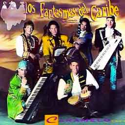
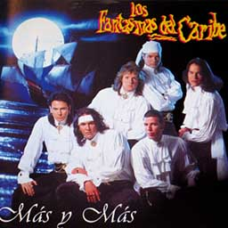
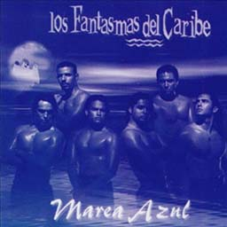
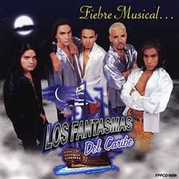
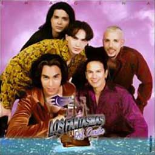
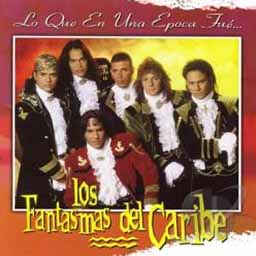

Nuestra discografía
- Caramelo (1993)
- Más y Más (1994)
- Marea Azul (1996)
- Fiebre Musical (1997)
- Imagina (1998)
- Lo mejor de (2003)
- Lo Que En Una Época Fue (2005)
Caramelo (1993)

- Muchacha Triste
- Ella es
- Caramelo
- Bandolero / Aventurero
- Por una lágrima
- Dime niña
- Uno Maá
Más y Más (1994)

- Carmín
- Más y más
- Celina
- Como decir T.Q.
- Mientras más te veo, más te quiero
- Para conquistar tu amor
- Mi pequeño amor
- Adiós amigos
- Recuerdo
Marea Azul (1996)

- Siempre siempre
- Rosa linda
- Vas a querer
- Llora, llora
- Junto a tu corazón
- 15 años
- Linda muchachita
- Celos
- Dulce, dulce
- Ojos negros
- Habla noche, canta luna
Fiebre Musical (1997)

- Si la vuelves a ver
- De corazón a corazón
- Fiebre
- Solo
- Una foto, una carta, un adión
- Vuelve
- Por qué
- Buscaré
- Corazón
- Como te extraño
Imagina (1998)

- Así eres tú
- Mira para arriba, mira para abajo
- Dueña de mí
- Ay, amor
- Recuérdame
- A quién
- Junto a mí
- Qué más puede pedir
- Cuando decimos a un amor adiós
- Ahora quiero volver
Lo mejor de (2003)

- Muchacha triste
- Celina
- Mi pequeño amor
- Agüita 'e Coco
- Por una lágrima
- Más y más
- Ella es
- Bandolero / Aventurera
- Recuerdo
- Adiós, amigos
- Uno más
- Rosa linda
- Carmín
- Déjame abrazarte
- Siempre siempre
- 15 años
- Como decir T.Q.
- Llora, llora
- Caribe soy
Lo Que En Una Época Fue (2005)

- Siempre siempre
- Rosa linda
- Vas a querer
- Llora, llora
- Junto a tu corazón
- 15 años
- Linda muchachita
- Celos
- Dulce, dulce
- Ojos negros
- Habla noche, canta luna